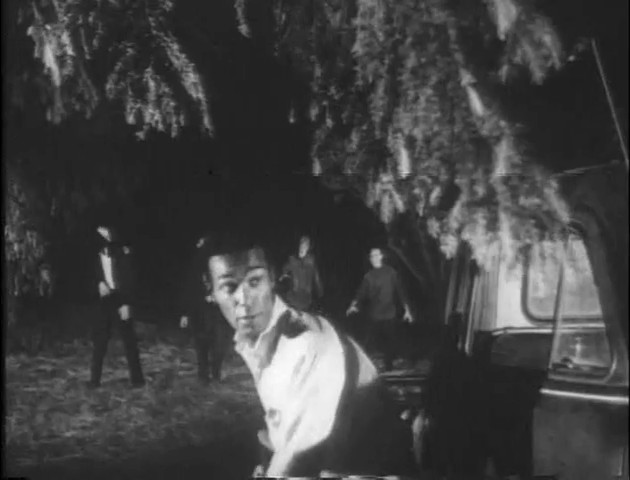

Night of the Living Dead, frame at 1:09:25
George A. Romero · 1968 · Film, black and white (frame)
Free to use
Image Ten, the company formed to make the film, started with $6,000, $600 from each member, and shooting stopped several times while Romero showed early footage to new investors. The final budget was about $114,000. With no money for a set, the crew rented a farmhouse due for demolition. It had no running water, and some of them slept there and bathed in a nearby creek. The blood was Bosco chocolate syrup.